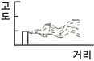
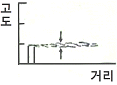
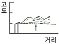
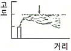
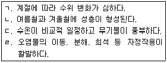
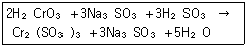

환경기능사 (2016-01-24 기출문제)
1과목: 대기오염방지
1. 대기환경보전법상 온실가스에 해당하지 않는 것은?
- NH3
- CO2
- CH4
- N2O
(정답률: 74%)

2. 런던 스모그와 비교한 로스앤젤레스형 스모그 현상의 특성으로 옳은 것은?
- SO2, 먼지 등이 주오염물질
- 온도가 낮고 무풍의 기상조건
- 습도가 높은 이른 아침
- 침강성 역전층이 형성
(정답률: 69%)
3. 가솔린을 연료로 사용하는 자동차의 엔진에서 NOx가 가장 많이 배출될 때의 운전 상태는?
- 감속
- 가속
- 공회전
- 저속(15km 이하)
(정답률: 82%)
4. 일반적으로 배기가스의 입구처리속도가 증가하면 제거효율이 커지며, 블로다운 효과와 관련된 집진장치는?
- 중력집진장치
- 원심력집진장치
- 전기집진장치
- 여과집진장치
(정답률: 79%)
5. 유해가스 흡수장치의 흡수액이 갖추어야 할 조건으로 옳은 것은?
- 용해도가 작아야 한다.
- 휘발성이 커야 한다.
- 점성이 작아야 한다.
- 화학적으로 불안정해야 한다.
(정답률: 64%)
6. 기체의 용해도에 대한 설명이 틀린 것은?
- 온도가 증가 할수록 용해도가 커진다.
- 용해도는 기체의 압력에 비례한다.
- 용해도가 작은 기체는 헨리 상수가 크다.
- 헨리의 법칙이 잘 적용되는 기체는 용해도가 작은 기체이다.
(정답률: 56%)
7. 상층부가 불안정하고 하층부가 안정을 이루고 있을 때의 연기의 모양은?




(정답률: 86%)
8. 직경이 5㎛이고 밀도가 3.7g/cm3인 구형의 먼지입자가 공기 중에서 중력침강할 때 종말침강속도는? (단, 스톡스 법칙 적용, 공기의 밀도 무시, 점성 계수 1.85×10-5 kg/m·s)
- 약 0.27㎝/s
- 약 0.32㎝/s
- 약 0.36㎝/s
- 약 0.41㎝/s
(정답률: 41%)
9. 후드의 설치 및 흡인요령으로 가장 적합한 것은?
- 후드를 발생원에 근접시켜 흡인시킨다.
- 후드의 개구면적을 점차적으로 크게 하여 흡인속도에 변화를 준다.
- 에어커텐(air curtain)은 제거하고 행한다.
- 배풍기(blower)의 여유량은 두지 않고 행한다.
(정답률: 79%)
10. 여과집진장치에 사용되는 다음 여포재료 중 가장 높은 온도에서 사용이 가능한 것은?
- 목면
- 양모
- 카네카론
- 글라스화이버
(정답률: 82%)
11. 포집먼지의 중화가 적당한 속도로 행해지기 때문에 이상적인 전기집진이 이루어질 수 있는 전기저항의 범위로 가장 적합한 것은?
- 102 ~ 104 Ω·㎝
- 105 ~ 1010 Ω·㎝
- 1012~1014 Ω·㎝
- 1015~1018 Ω·㎝
(정답률: 71%)
12. 연료의 연소과정에서 공기비가 너무 큰 경우 나타나는 현상으로 가장 적합한 것은?
- 배기가스에 의한 열손실이 커진다.
- 오염물의 농도가 커진다.
- 미연분에 의한 매연이 증가한다.
- 불완전 연소되어 연소효율이 저하된다.
(정답률: 58%)
13. 전기집진장치에 관한 설명으로 가장 거리가 먼 것은?
- 대량의 가스 처리가 가능하다.
- 전압변동과 같은 조건변동에 쉽게 적응할 수 있다.
- 초기 설비비가 고가이다.
- 압력손실이 적어 소요동력이 적다.
(정답률: 70%)
14. 20℃, 740mmHg에서 SO2 가스의 농도가 5ppm이다. 표준상태(S.T.P)로 환산한 농도(ppm)는?(오류 신고가 접수된 문제입니다. 반드시 정답과 해설을 확인하시기 바랍니다.)
- 4.54
- 5.00
- 5.51
- 12.96
(정답률: 46%)
15. 사이클론으로 100% 집진할 수 있는 최소입경을 의미하는 것은?
- 절단입경
- 기하학적 입경
- 임계입경
- 유체역학적 입경
(정답률: 76%)
2과목: 폐수처리
16. C2H5OH이 물 1L에 92g 녹아있을 때 COD(g/L) 값은? (단, 완전분해 기준)
- 48
- 96
- 192
- 384
(정답률: 52%)
17. 다음 용어 중 흡착과 가장 관련이 깊은 것은?
- 도플러효과
- VAL
- 플라크상수
- 프로인톨리히의 식
(정답률: 63%)
18. 다음 보기에서 우리나라 하천수의 일반적인 수질적 특징만을 골라 묶여진 것은?

- ㄱ,ㄴ
- ㄴ, ㄷ
- ㄷ,ㄹ
- ㄱ, ㄹ
(정답률: 67%)
19. 오존 살균 시 급수계통에서 미생물의 증식을 억제하고, 잔류살균효과를 유지하기 위해 투입하는 약품은?
- 염소
- 활성탄
- 실리카겔
- 활성알루미나
(정답률: 75%)
20. 125m3/h의 폐수가 유입되는 침전지의 월류부하가 100m3/m·day일 경우 침전지 월류웨어의 유효길이는?
- 10m
- 20m
- 30m
- 40m
(정답률: 56%)
21. 폐수의 살균에 대한 설명으로 옳은 것은?
- NH2Cl 보다는 HOCl이 살균력이 작다.
- 보통 온도를 높이면 살균속도가 느려진다.
- 같은 농도일 경우 유리잔류염소는 결합잔류염소 보다 빠르게 작용하므로 살균능력도 훨씬 크다.
- HOCl이 오존보다 더 강력한 산화제이다.
(정답률: 62%)
22. 수질오염공정시험기준에 의거 페놀류를 측정하기 위한 시료의 보존방법(㉠)과 최대보존기간(㉡)으로 가장 적합한 것은?
- ㉠ 현장에서 용존산소 고정 후 어두운 곳 보관, ㉡ 8시간
- ㉠ 즉시 여과 후 4℃ 보관, ㉡ 48시간
- ㉠ 20℃ 보관, ㉡ 즉시 측정
- ㉠ 4℃ 보관, H3PO3로 pH 4 이하 조정한 후 CuSO3 1g/L 첨가, ㉡ 28일
(정답률: 72%)
23. 살수여상의 표면적이 300m2, 유입분뇨량이 1500m3/일이다. 표면부하는 얼마인가?
- 3m3/m2·일
- 5m3/m2·일
- 15m3/m2·일
- 18m3/m2·일
(정답률: 69%)
24. 어느 공장폐수의 Cr6+이 600mg/L이고, 이 폐수를 아황산나트륨으로 환원처리 하고자 한다. 폐수 량이 40m3/day일 때, 하루에 필요한 아황산나트륨의 이론양은? (단, Cr 원자량 52, Na3SO3 분자량 126)

- 72kg
- 80kg
- 87kg
- 95kg
(정답률: 53%)
25. 우리나라 강수량 분포의 특성으로 가장 거리가 먼 것은?
- 월별 강수량 차이가 큰 편이다.
- 하천수에 대한 의존량이 큰 편이다.
- 6월과 9월 사이에 연 강수량의 약 2/3 정도가 집중되는 경향이 있다.
- 세계 평균과 비교 시 연간 총 강수량은 낮으나, 인구 1인당 가용수량은 높다.
(정답률: 77%)
26. 생물학적으로 인을 제거하는 반응의 단계로 옳은 것은?
- 혐기 상태 → 인 방출 → 호기 상태 → 인 섭취
- 혐기 상태 → 인 섭취 → 호기 상태 → 인 방출
- 호기 상태 → 인 방출 → 혐기 상태 → 인 섭취
- 호기 상태 → 인 섭취 → 혐기 상태 → 인 방출
(정답률: 59%)
27. 하수관로의 배수형식 중 하수를 방류할 때 일단 간선 하수 차집거에 모아 처리장으로 보내어 처리한 후 배출하는 방식으로 하천 유량이 하수량을 배출하기에는 부족하여 하천의 오염이 심할 것으로 예상되는 경우에 사용되는 방식은?
- 직각식
- 차집식
- 선형식
- 방사식
(정답률: 69%)
28. 버섯은 어느 부류에 속하는가?
- 세균
- 균류
- 조류
- 원생동물
(정답률: 85%)
29. 기름입자 A와 B의 지름은 동일하나 A의 비중은 0.88이고, B의 비중은 0.91이다. 이때의 A/B의 부상속도비는? (단, 기타 조건은 같다.)
- 1.03
- 1.33
- 1.52
- 1.61
(정답률: 44%)
30. MLSS 농도 3000mg/L인 포기조 혼합액을 1000mL 메스실린더로 취해 30분간 정치시켰을 때, 침강슬러지가 차지하는 용적은 440mL 이었다. 이때 슬러지밀도지수(SDI)는?
- 146.7
- 73.4
- 1.36
- 0.68
(정답률: 30%)
31. 다음 중 해역에서 적조 발생의 주된 원인 물질 은?
- 수은
- 산소
- 염소
- 질소
(정답률: 69%)
32. 오염물질을 배출하는 형태에 따라 점오염원과 비점오염원으로 구분된다. 다음 중 비점오염원에 해당하는 것은?
- 생활하수
- 농경지 배수
- 축산폐수
- 산업폐수
(정답률: 78%)
33. 폐수 처리 분야에서 미생물이라 하는 개체의 크기 기준으로 가장 적절한 것은?
- 1.0㎜ 이하
- 3.0㎜ 이하
- 5.0㎜ 이하
- 10.0㎜ 이하
(정답률: 73%)
34. 0.1 M NaOH 1000mL를 0.3 M H2SO3으로 중화 적정 할 때 소비되는 이론적 황산량은?
- 126mL
- 167mL
- 234mL
- 277mL
(정답률: 48%)
35. 살수여상 처리과정에 주의해야 할 점으로 거리가 먼 것은?
- 악취
- 연못화
- 팽화
- 동결
(정답률: 64%)
3과목: 폐기물처리
36. 쓰레기 수거노선을 결정할 때 고려사항으로 옳지 않은 것은?
- 아주 많은 양의 쓰레기가 발생되는 발생원은 하루 중 가장 나중에 수거한다.
- 가능한 한 시계방향으로 수거노선을 정한다.
- U자형 회전을 피하여 수거한다.
- 적은 양의 쓰레기가 발생하나 동일한 수거빈도를 받기를 원하는 수거지점은 가능한 한 같은 날 왕복 내에서 수거하도록 한다.
(정답률: 82%)
37. 다음 중 퇴비화의 최적조건으로 가장 적합한 것은?
- 수분 50~60%, pH 5.5~8 정도
- 수분 50~60%, pH 8.5~10 정도
- 수분 80~85%, pH 5.5~8 정도
- 수분 80~85%, pH 8.5~10 정도
(정답률: 65%)
38. 인구 50만 명이 거주하는 도시에서 1주일 동안 8000m3의 쓰레기를 수거하였다. 쓰레기의 밀도가 420kg/m3이라면 쓰레기 발생원 단위는?
- 0.91kg/인·일
- 0.96kg/인·일
- 1.03kg/인·일
- 1.12kg/인·일
(정답률: 54%)
39. 쓰레기를 건조시켜 함수율을 40%에서 20%로 감소시켰다. 건조 전 쓰레기의 중량이 1톤이었다면 건조 후 쓰레기의 중량은? (단, 쓰레기의 비중은 1.0으로 가정함)
- 250kg
- 500kg
- 750kg
- 1000kg
(정답률: 58%)
40. 다음 중 폐기물의 퇴비화 시 적정 C/N 비로 가장 적합한 것은?
- 1∼2
- 1~10
- 5~10
- 25~50
(정답률: 57%)
41. 폐기물을 소각할 경우 필요한 폐열회수 및 이용 설비가 아닌 것은?
- 과열기
- 부패조
- 이코노마이저
- 공기예열기
(정답률: 66%)
42. 적환장의 설치가 필요한 경우로 가장 거리가 먼 것은?
- 인구 밀도가 높은 지역을 수집하는 경우
- 폐기물 수집에 소형 컨테이너를 많이 사용하는 경우
- 처분장이 원거리에 있어 도중에 불법 투기의 가능성이 있는 경우
- 공기수송방식을 사용할 경우
(정답률: 46%)
43. 폐기물 전단파쇄기에 관한 설명으로 틀린 것은?
- 전단파쇄기는 대개 고정칼, 회전칼과의 교합에 의하여 폐기물을 전단한다.
- 전단파쇄기는 충격파쇄기에 비하여 파쇄속도는 느리나, 이물질의 혼입에 대하여는 강하다.
- 전단파쇄기는 파쇄물의 크기를 고르게 할 수 있다.
- 전단파쇄기는 주로 목재류, 플라스틱류 및 종이류를 파쇄하는데 이용된다.
(정답률: 66%)
44. 연료의 연소에 필요한 이론공기량을 Ao, 공급된 실제공기량을 A라 할 때 공기비를 나타낸 식은?
- A / Ao
- Ao / A
- (A-Ao) / Ao
- (A-Ao) / A
(정답률: 67%)
45. 폐기물 수거 효율을 결정하고 수거작업간의 노동력을 비교하기 위한 단위로 옳은 것은?
- ton/man·hour
- man·hour/ton
- ton·man/hour
- hour/ton·man
(정답률: 74%)
46. 매립지에서 발생될 침출수량을 예측하고자 한다. 이때 침출수 발생량에 영향을 받는 항목으로 가장 거리가 먼 것은?
- 강수량(Precipitation)
- 유출량(Run-off)
- 메탄가스의 함량
- 폐기물 내 수분 또는 폐기물 분해에 따른 수분
(정답률: 69%)
47. 쓰레기를 수송하는 방법 중 자동화, 무공해화가 가능하고 눈에 띄지 않는다는 장점을 가지고 있으며 공기수송, 반죽수송, 캡슐수송 등의 방법으로 쓰레기를 수거하는 방법은?
- 모노레일 수거
- 관거 수거
- 콘베이어 수거
- 콘테이너 철도수거
(정답률: 75%)
48. 쓰레기 발생량에 영향을 미치는 일반적인 요인에 관한 설명으로 옳은 것은?
- 쓰레기의 성분은 계절에 영향을 받는다.
- 수거빈도와 발생량은 반비례한다.
- 쓰레기통이 클수록 발생량이 감소한다.
- 재활용율이 높을수록 발생량이 증가한다.
(정답률: 70%)
49. 폐기물 매립지에서 발생하는 침출수 중 생물학 적으로 난분해성인 유기물질을 산화 분해시키는데 사용되는 펜턴시약(Fenton agent)의 성분으로 옳은 것은?
- H2O2와 FeSO3
- KMnO3와 FeSO3
- H2SO3와 Al2 (SO3)3
- Al2 (SO3)3와 KMnO3
(정답률: 65%)
50. 다음 중 슬러지 탈수 방법으로 가장 거리가 먼 것은?
- 원심분리
- 산화지
- 진공여과
- 벨트프레스
(정답률: 60%)
51. 수거된 폐기물을 압축하는 이유로 거리가 먼 것은?
- 저장에 필요한 용적을 줄이기 위해
- 수송 시 부피를 감소시키기 위해
- 매립지의 수명을 연장시키기 위해
- 소각장에서 소각 시 원활한 연소를 위해
(정답률: 61%)
52. 탄소 1kg이 연소할 때 이론적으로 필요한 산소의 질량은?
- 4.1kg
- 3.6kg
- 3.2kg
- 2.7kg
(정답률: 40%)
53. 다음 중 효율적인 파쇄를 위해 파쇄대상물에 작용하는 3가지 힘에 해당되지 않는 것은?
- 충격력
- 정전력
- 전단력
- 압축력
(정답률: 81%)
54. 소각장에서 폐기물을 연소시킬 때 조건으로 가장 거리가 먼 것은?
- 완전연소를 위해 체류시간은 가능한 한 짧아야 한다.
- 연료와 공기가 충분히 혼합되어야 한다.
- 공기/연료비가 적절해야 한다.
- 점화온도가 적장하게 유지되고 재의 방출이 최소화 될 수 있는 소각로 형태이어야 한다.
(정답률: 79%)
55. 합성차수막 중 PVC의 특성으로 가장 거리가 먼 것은?
- 작업이 용이한 편이다.
- 접합이 용이한 편이다.
- 대부분의 유기화학물질에 약한 편이다.
- 자외선, 오존, 기후 등에 강한 편이다.
(정답률: 69%)
4과목: 소음 진동학
56. 점음원에서 5m 떨어진 지점의 음압레벨이 60dB이다. 이 음원으로부터 10m 떨어진 지점의 음압 레벨은?
- 30dB
- 44dB
- 54dB
- 58dB
(정답률: 60%)
57. 방음대책을 음원대책과 전파경로대책으로 구분할 때 다음 중 음원대책이 아닌 것은?
- 공명방지
- 방음벽 설치
- 소음기 설치
- 방진 및 방사율 저감
(정답률: 61%)
58. 두 진동체의 고유진동수가 같을 때 한 쪽을 울리면 다른 쪽도 울리는 현상은?
- 공명
- 진폭
- 회절
- 굴절
(정답률: 79%)
59. 형상의 선택이 비교적 자유롭고 압축, 전단 등의 사용방법에 따라 1개로 2축방향 및 회전방향의 스프링 정수를 광범위하게 선택할 수 있으나, 내부마찰에 의한 발열 때문에 열화되는 방진재료는?
- 방진고무
- 공기스프링
- 금속스프링
- 직접지지판 스프링
(정답률: 61%)
60. 변동하는 소음의 에너지 평균 레벨로서 어느 시간 동안에 변동하는 소음 레벨의 에너지를 같은 시간대의 정상 소음의 에너지로 치환한 값은?
- 소음레벨(SL)
- 등가소음레벨(Leq)
- 시간율 소음도(Ln)
- 주야등가소음도(Ldn)
(정답률: 66%)